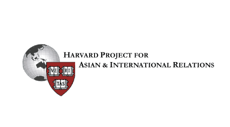
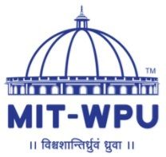

Home
Work Experience
Listing some of my internships and work (associated with various organizations) here. All logos displayed on this page are property of the respective organizations.
Junior Machine Learning Engineer - Omdena
Amongst the 35 engineers from over 24 countries working on mitigating the African energy crisis.
Worked with RA 365, a Nigerian NGO to leverage Artificial Intelligence for developing solutions and providing renewable energy to the Nigerian communities.
Some of our core work included:
◦ Creating heatmaps to track areas with lack of energy and potential places to install solar panels
◦ Classifying regions based on solar irradiance and panel PPI
Delegate for Energy and Sustainability - Harvard Project for Asian and International Relations
February 2020

Teaching Fellow - MIT-WPU

Conducting lectures and workshops on various topics in both computer science and physics.
Teaching topics:
◦ Computer Vision
◦ Machine Learning
◦ Quantum Mechanics